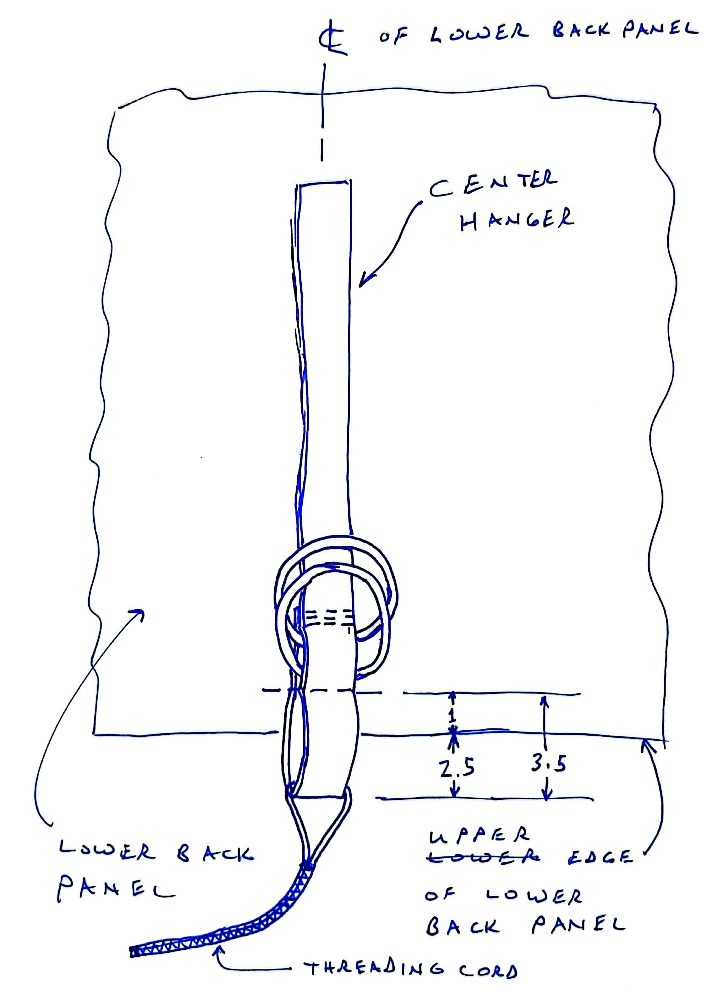

5 Assembly
5.1 Back panel
To assemble the back panel of the backpack start by sewing the center hanger assembly. Use the 35 cm segment of 15mm webbing and two 15m stainless welded rings. Assemble them as shown in Figure 5.1.
Thread the 20 cm of 1mm line through the loop in the 15mm webbing. fold the 1mm line in half. Zig-zag stitch the halves of the 1mm line together from about 3 cm below the webbing the tip of the folder line. While not shown in Figure 5.1, this line is visible in Figure 5.4
Then prepare the hose exits for assembly by putting a 1 cm hem in the left and right edges of each of the four hose exit panels as shown in Figure 5.2.
On the top of the lower back panel and the bottom of the upper back panel, mark the vertical center line of each panel. Also mark 12.5 cm left and right of each panel. The 12.5cm mark will be the outer edge of each the tube exit. It’s easiest to mark the backside of the fabric, but you’ll need to see the 12.cm mark on the face of the fabric.
With one of the back panels face up, align a hose exit panel with the outer edge mark as shown in Figure 5.3 Stitch the hose exit panel to the back panel with a 1 cm straight-stitch hem. Be sure to be sure top back-stitch this seam. Stitch the hemmed edge with a zig-zag stitch. Repeat this these steps with the other hose exit on this back panel. Repeat the process with the other back panel.
With the lower back panel face up, align the center hanger along the center line of the lower back panel. 2.5 cm of looped end of the center hanger should protrude beyond the edge the back panel. See Figure 5.4 for more detail. Sew the center hanger to the back panel 1 cm inboard of the back panel edge.

Align the two back panels, face-to-face along the edge where the hose exist are attached. The hose exit panels should be hidden and aligned in two pairs. Sew a 1 cm straight-stitch hem to join the panels, but do not stitch across the hose exits. It’s OK to put one stitch on the hose exits, but stitching more than 3mm will narrow the opening. Also be sure to back-stitch left and right of the hose exits.
Now fold the back panels together to expose the tube panels. Fold 2 cm of top one one hose exit panel towards its mate. Sew a straight-stitch hem at the bottom of the fold. Repeat this step with each of the other 3 hose exit panels. Make sure to stitch them separately, not to each other. These will form a pocket for a draw string.
Mark the middle of a 20 cm long 1mm cord. Thread the ends through the pockets you just made in the hose exit panels. Thread towards the middle of the back panel. Align the mid-line mark of the cord with the outer edge of the hose exit panels. Sew the outer edge of the hose exit panel from the joined back panels all the way to the top of the hose exit panels joining the panels and pinning the 1mm cord in one stitch line.
Stitch the in-board side of the hose exit panels from the joined back panels, but the lift the cord high in the pockets and stop just shy of the cord. Do not stitch the cord on this side. Each cord should function like a draw string to close the tube exit tightly.
With the sewing of the hose exits complete, thread each pair of cord ends through a cord lock. Tie the end of each pair with an over-hand knot to retain the cord lock.
Trim a 1 cm square from each corner of the back panel assembly. Fold and hem all of the back panel edges.
Align the long hook strip to the bottom edge of the back panel, center it and sew all four edges to the back panel.
Mark the backside of the back panel 11 cm above the bottom edge. Attach one of the mesh panels to the along that marked line with a 1 cm hem above the marked line.
To attach the girth straps to the back panel, mark the face of the back panel at 6 cm and 32 cm below the upper seam. Still on the face, mark the vertical center line of the back panel. Also measure about 10 cm from the vertical center line. Mark the center line on the upper girth strap. Align the center line of the upper girth strap with center line of the back panel along the 6 cm mark. Stitch the central 20 cm of the strap to the back panel with a zig-zag stitch. Repeat this process for lower girth strap along the 32 cm mark. See Figure 5.7 for more detail.
Resizing note: stitched length on the girth straps varies with buggy size. S:20, M:22, L:24
Attach a pair of 15mm welded stainless steel rings to one end of each girth strip. Pass 2 cm of strap through the pair of rings and stitch the end to the strap with a 6 straight stitch passes.
The back panel’s flap closure requires two more pieces that require tricky alignment. Spread out the back panel face up placing the flap closure closest to you. Mark the diagonal construction lines shown in Figure 5.8. Thread one half of the plastic side-release buckle onto the 25cm piece of webbing. Use the diagonal construction lines to position the webbing on the panel. Stitch the webbing to the panel with a zig-zag stitch. Use the construction lines to position the 5cm hook strip. Stitch all four edges of the 5cm hook strip.
Option B note: The position of the closure fittings is not yet known for Option B.
5.2 Front panel
The construct the front panel, start by trimming a 1 cm square from each corner of the front panel and adding a 1 cm hem to each edge.
Sew a 5cm loop strip to the top left corner of front panel. Orient the strip horizontally as shown in Figure 5.9

Option B note: The position of the closure fittings is not yet known for Option B.
Align the long loop strip with the long edge of the dirt-out panel of ripstop nylon. Overlap the ripstop with 1 cm of the loop strip. Sew them together with a straight stitch.
Align the edge of the long loop strip to the bottom edge of the front panel, center it and sew all four edges of the loop strip to the back panel.
Mark the backside of the front panel 11 cm above the bottom edge. Attach one of the mesh panels along that marked line with a 1 cm hem above the marked line.

Mark the face of the front panel 31 cm below the upper finished edge to denote where the main pouch will be folded. Mark the vertical center line of the face of the front panel. Align the top of the closed phone pouch with 31 cm mark centering it on the face of the front panel. As shown in Sew the left and right edges of the phone pouch to the face of the main pouch front panel. Tack the seam at the upper left and right corners.

Option B note: The height below the top panel depends on the closure option: A:31, B:40
5.3 Panel assembly
Align the backsides of the front and back panels. Sew down the left and right edges from the top to the mesh seam line.
Fold the lower section of the front and back panels up to expose the mesh panels. Pin the mesh panels together along a curving path like a smile. Sew a straight stitch along the curving line. Trim 1 cm beyond the seam. Triple zig-zag stitch the seam allowance.
Note: It might be useful to stabilize the mesh with a wide strip of blue painters tape to sew it. If you’re alignment is good as you back stitch the seam, it is easy to peel the tape off with the seam forming a perforation in the tape. Just make sure you peel the tape off before you apply the zip-zag stitching as that makes tape removal extremely difficult.

Sew the remaining portion of the left and right edges of the main pouch.
5.4 Accessories
5.4.1 Flap Closure Anchor
To make a anchor for the backpack’s folder flap, fold back 7 cm of the 65 cm piece of 15 mm webbing onto itself and stitch the end for form a 7 cm loop. Thread the free end of the webbing into the lower clip of the plastic side-release buckle. See Figure 2.1

Option B note: make two for Option B
5.4.2 Strapped-on Bite Valve Anchors
The bite valve anchors are magnets captured in fabric sewn to a strip of hook-and-look. When installed, the hook-and-loop strip is wrapped around a portion of the buggy to hold the magnet in place. The large anchor is sized for the seat tube. It can be affixed to the left or right side of any buggy. The small anchor is sized for the seat straps. They can also be affixed om the left or right sides of the buggy, but those straps are only exposed if the buggy is undressed.
Stitch 39 mm of the hook strip to the backside of the 12 cm loop strip to make the short anchor.
Stitch 3 cm of the hook strip to the backside of the 15 cm loop strip to make the short anchor.
Wrap the 18 mm magnet in a 5 x 5 cm piece of insignia cloth. Test the magnet’s polarity against the bite valve anchor that came attached to the water bladder hose. Note which side of the wrapped magnet adheres to the magnet on the hose and mark this side as up. Place the wrapped magnet on the loop side of the strap, right side up, and centered between the ends of the strap. Stitch the ends of the wrapped magnet to the strap. Trim the excess length off the ends of the wrapped magnet leaving 5mm at beyond the seam.
Note: If the magnet’s attraction to the sewing machine deck causes issues, slide a few layers of thing cardboard under the strap.
5.4.3 Sticky Bite Valve Anchors
Dressed buggies might need additional anchor points on side dressing. These can be affixed with peel-and-stick insignia cloth. Wrap an 18 mm magnet in a 5 x 5 cm piece of insignia cloth that matches the dressing. Test the magnet’s polarity against hose’s magnet. Mark the up and down sides. Trim the ends of the wrapped cloth, so it is no more that 3cm long. Affix the magnet to the center of a 5 cm circle of insignia cloth with the upside of the magnet against the adhesive. Affix the circle of insignia cloth to the side plates.
Note: A galvanic corrosion risks arises when affixing the magnet to the side plate because the aluminum of the Dibond plate and the nickel-plating of the magnet have different electric potentials. Seawater vastly accelerates this reaction. These magnets should be well-rinsed after any beach trip and checked for corrosion every other year. It’s unclear if rinsing can prevent damage to the Dibond plates.